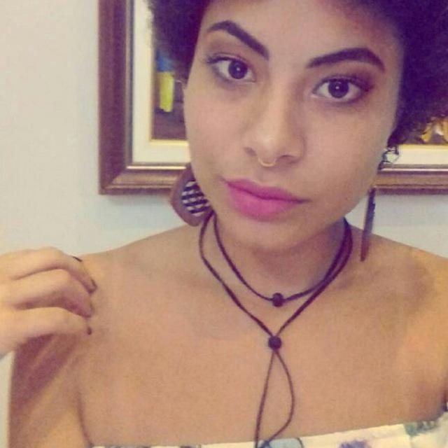

Definição de Gamificação
“Gamificação é um conjunto de técnicas de jogos aplicados a contexto que não são de jogos. Objetivo principal é motivar mudança de comportamento de um grupo de pessoas com mesmos objetivos”
“Gamificação é um conjunto de técnicas de jogos aplicados a contexto que não são de jogos. Objetivo principal é motivar mudança de comportamento de um grupo de pessoas com mesmos objetivos”